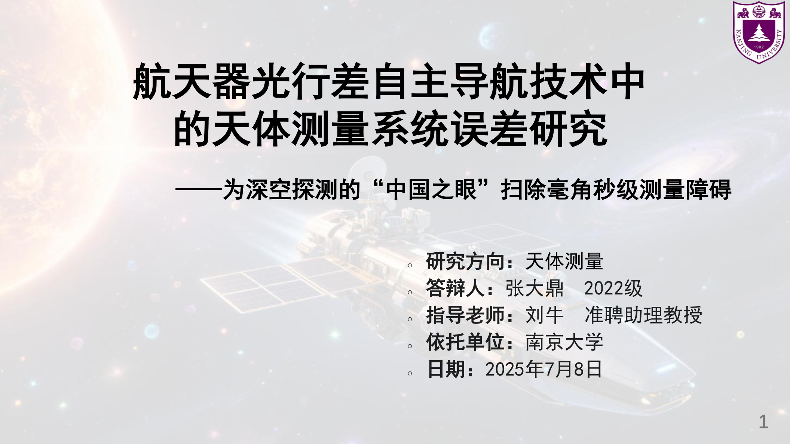
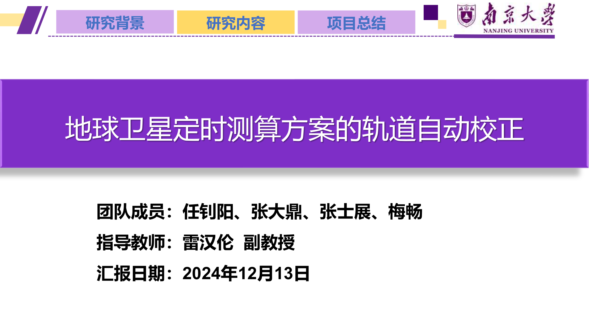

航天器光行差自主导航
以深空探测中的毫角秒级光行差信号为对象，评估星表精度、观测模型和仪器误差对导航结果的限制。
Profile
南京大学天文与空间科学学院空间科学与技术专业本科生，已保研至本校天体测量方向。研究兴趣包括 Gaia 星表应用、光行差自主导航、近场 VLBI 延迟模型、轨道动力学与机器学习在天文数据中的应用。
Research
以深空探测中的毫角秒级光行差信号为对象，评估星表精度、观测模型和仪器误差对导航结果的限制。
构建从星表误差、底片模型误差到导航量误差的传递链，用仿真给出精度下限和敏感参数。
在比利时皇家天文台访问期间，参与近场 VLBI 观测模型与延迟计算相关研究。

Core Project
国家自然科学基金本科生项目，负责人。项目聚焦深空自主导航中“信号弱、误差强”的核心矛盾，分析天体测量系统误差如何限制光行差导航精度。
Selected Work
第一作者 · 中文核心接收
基于上海航天八院项目，评估 Gaia 星表在深空探测任务中的导航性能，论文已被《飞控与探测》接收。

大学生创新训练项目 · 核心成员
使用 MATLAB 实现 Laplace 定轨算法，并通过 STK 搭建链路仿真场景，分析载噪比、误码率并优化链接策略。
AI for Science · 负责人
将 FITS 观测数据处理为标准化密度图，基于 Create ML 训练 CNN 模型，实现特殊案例的自动分类。
Experience
开展近场 VLBI 延迟模型相关研究。
报告 Gaia 星表在光行差自主导航中的应用研究。
组织学术文体活动二十余次，参与学院宣传与新生分流讲座。
GPA 4.2/5.0，曾获国家天文台奖学金、人民奖学金、校优秀学生等荣誉。
Toolkit